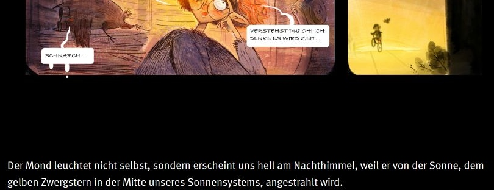

Leas Rechercheweg
Gespeicherter Link in Leas Notiz
Dieselbe Seite

Erster Textabsatz unter dem Comic · erster Satz
Vergrößerter Originalausschnitt · 13.10.2026 · Universität Münster / Frag Sophie!
Leas Notiz